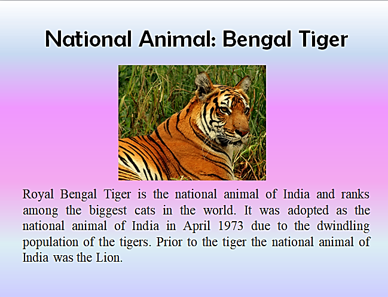

| Sr. No | Property | Value |
|---|
| 1 | National Flag | Tiranga |
| 2 | National Anthem | Jana Gana Mana |
| 3 | National Calendar | Saka calendar |
| 4 | National Song | Vande Mataram |
| 5 | National Emblem | National Emblem of India |
| 6 | National Fruit | Mango |
| 7 | National River | Ganga |
| 8 | National Animal | Royal Bengal Tiger |
| 9 | National Tree | Indian Banyan |
| 10 | National Aquatic Animal | Ganges River Dolphin |
| 11 | National Bird | Indian Peacock |
| 12 | National Currency | Indian Rupee |
| 13 | National Reptile | King Cobra |
| 14 | National Heritage Animal | Indian Elephant |
| 15 | National Flower | Lotus |
| 16 | National Vegetable | Pumpkin |
| 17 | Oath of Allegiance | National Pledge |